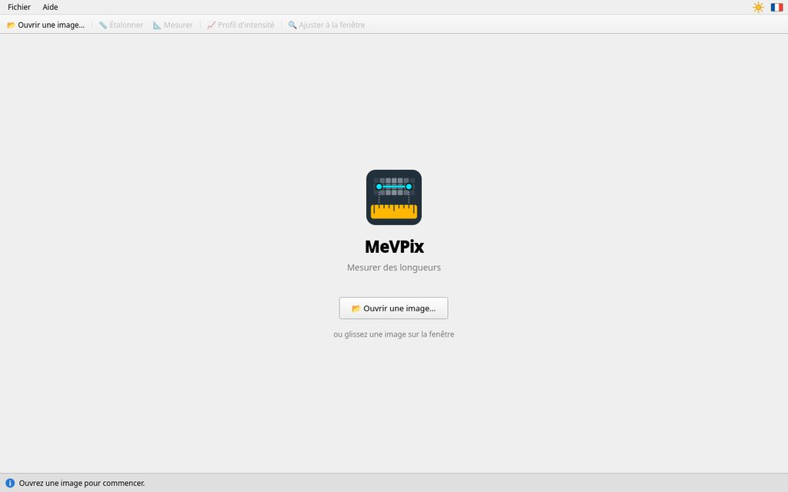
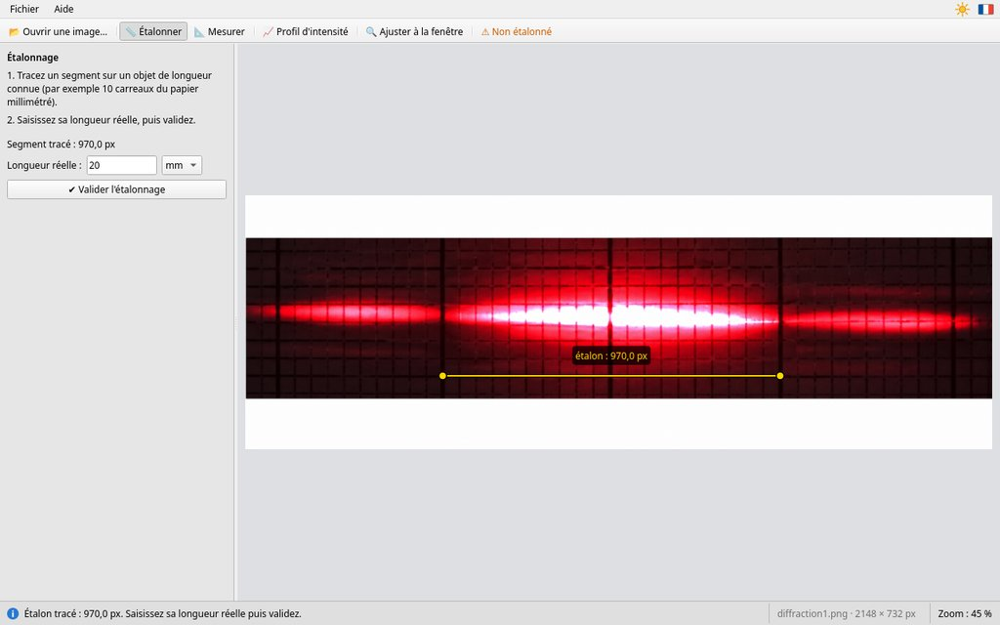
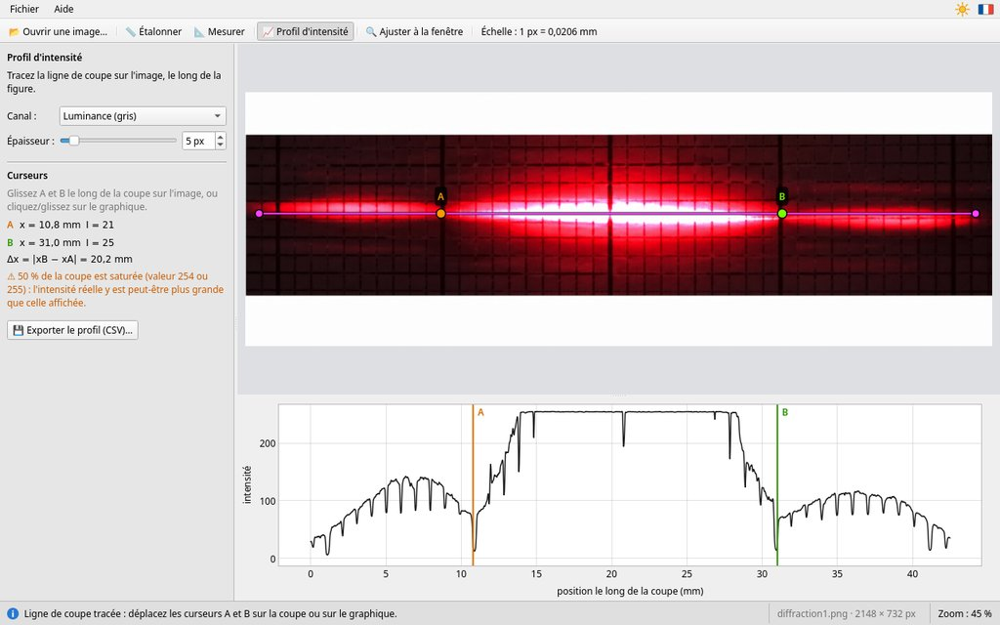

MeVPix — Notice d'utilisation
Mesurer des longueurs · version {{version}}
1. À quoi sert MeVPix ?
MeVPix sert à mesurer des longueurs sur une image : une photo prise avec un téléphone, une image de microscope, une carte… On procède en deux temps :
- on montre au logiciel un objet de l'image dont on connaît la longueur : c'est l'étalon (par exemple 2 cm du papier millimétré) ;
- on trace des segments sur l'image : MeVPix donne leur longueur réelle.
En TP, on l'utilise par exemple pour mesurer la tache centrale d'une figure de diffraction, l'interfrange d'une figure d'interférences, la taille d'une cellule au microscope ou une distance sur une carte.
MeVPix trace aussi le profil d'intensité : la courbe de la luminosité le long d'une ligne. Les franges sombres et brillantes d'une figure d'optique y sont repérées bien plus précisément qu'à l'œil.
2. La fenêtre

- 1Barre d'outils : ouvrir une image, choisir l'outil (📏 Étalonner, 📐 Mesurer, 📈 Profil d'intensité), revoir toute l'image (🔍 Ajuster à la fenêtre) ; puis l'échelle de l'image.
- 2Thème et langue, à droite des menus : le soleil (thème clair) ou la lune (thème sombre), et le drapeau de la langue. Un clic passe à l'autre thème ou à l'autre langue.
- 3Panneau de l'outil : ce qu'il faut faire, puis les résultats (échelle, tableau des mesures, curseurs du profil).
- 4L'image, avec les tracés de l'outil choisi : l'étalon en jaune (Étalonner), les mesures en turquoise (Mesurer) ou la ligne de coupe en rose (Profil d'intensité). Les tracés des autres outils sont cachés, pas effacés.
- 5Barre d'état : à gauche, ce qu'il faut faire ensuite ou ce qui vient de se passer (en vert, une réussite ; en rouge, un problème) ; à droite, l'image ouverte, sa taille en pixels et son zoom.
Perdu ? Lisez la barre d'état, en bas de la fenêtre : elle indique toujours l'étape suivante.
3. Mesurer en trois étapes
Étape 1 : ouvrir l'image
Au démarrage, MeVPix montre sa page d'accueil.


Cliquez sur 📂 Ouvrir une image…, au milieu de la fenêtre ou dans la barre d'outils (ou Ctrl+O), ou glissez le fichier de l'image sur la fenêtre. MeVPix lit les images PNG, JPEG, BMP, TIFF et WebP (TIFF : pas dans la version AppImage pour Linux).
Photo d'iPhone (HEIC) : MeVPix ne la lit pas. Envoyez-vous la photo par courriel (elle arrive en JPEG), ou réglez l'appareil photo sur « Formats → Le plus compatible ».
Étape 2 : étalonner
L'étalonnage apprend à MeVPix combien mesure un pixel de l'image. Il se fait pour chaque image.
- L'outil 📏 Étalonner est choisi dès qu'une image est ouverte.
- Tracez un segment, clic gauche maintenu, d'un bout à l'autre d'un objet dont vous connaissez la longueur : lignes du papier millimétré, graduations d'une règle, échelle d'une image de microscope. Avec Maj enfoncée, le segment reste horizontal ou vertical.
- Saisissez sa longueur réelle (par exemple « 20 ») et choisissez l'unité (µm, mm, cm ou m).
- Cliquez sur ✔ Valider l'étalonnage, ou appuyez sur Entrée. L'échelle s'affiche dans la barre d'outils (« Échelle : 1 px = 0,0206 mm ») et MeVPix passe à l'outil Mesurer.


Étape 3 : mesurer
Avec l'outil 📐 Mesurer, chaque segment tracé (clic gauche maintenu) devient une mesure. Sa longueur s'affiche sur l'image (M1, M2…) et dans le tableau du panneau (voir la figure de la partie 2).
- Corriger une mesure : attrapez une extrémité (poignée ronde) et déplacez-la.
- Supprimer une mesure : la corbeille 🗑 à côté de la mesure, ou Ctrl+Z pour la dernière ; Tout effacer les supprime toutes.
Garder ses résultats
- Les mesures : 📋 Copier le tableau, puis Ctrl+V dans un tableur (LibreOffice Calc, Excel, MeVReg, Regressi) ou dans votre compte rendu. Le tableau a deux colonnes : « Mesure » et « Longueur (mm) ».
- Le profil d'intensité : 💾 Exporter le profil (CSV)… (partie 5).
- L'image avec ses tracés : faites une capture d'écran (sous Windows, Windows+Maj+S ; sous Linux, la touche Impr. écran).
MeVPix n'enregistre pas votre travail. Fermer MeVPix ou ouvrir une autre image efface l'étalonnage, les mesures et la coupe. Copiez-les avant : MeVPix le rappelle par une question, et « Annuler » est le choix par défaut.
4. Bien mesurer
Pointer précisément
- Zoomez avec la molette (le zoom est centré sur la souris), puis placez chaque extrémité au pixel près.
- Déplacez l'image avec le clic droit maintenu.
- 🔍 Ajuster à la fenêtre fait revoir toute l'image.
Choisir un bon étalon
- Long : une erreur de 1 pixel à chaque bout compte bien moins sur un long étalon. Sur 50 px (1 mm de papier millimétré), l'erreur est de 4 % sur toutes les mesures ; sur 1000 px (2 cm), de 0,2 %.
- Dans le même plan que l'objet mesuré, et l'appareil photo bien en face : sinon la perspective fausse les longueurs.
Précision du résultat
MeVPix affiche trois chiffres significatifs (« 20,2 mm ») : c'est un arrondi, pas une incertitude. L'incertitude vient surtout du pointage, environ 1 pixel à chaque extrémité. Avec l'échelle « 1 px = 0,0206 mm », c'est environ 0,04 mm sur une mesure. Pointer les mêmes extrémités plusieurs fois montre la dispersion de vos mesures.
Étalon modifié ? Si vous déplacez l'étalon, même un peu, ou changez sa longueur ou son unité, l'échelle passe en orange avec ⚠ et le panneau demande de valider à nouveau. En attendant, les mesures gardent l'ancienne échelle ; après la validation, elles sont recalculées : rien n'est perdu.
Sans étalonnage, les longueurs sont en pixels (« px ») et l'avertissement « ⚠ Non étalonné » reste affiché.
5. Le profil d'intensité
L'outil 📈 Profil d'intensité trace la courbe de la luminosité le long d'une ligne de coupe. Sur une figure de diffraction ou d'interférences, les creux de la courbe sont les franges sombres.
- Choisissez l'outil : le graphique apparaît sous l'image. (Un second clic sur le bouton revient à l'outil Mesurer.)
- Tracez la ligne de coupe sur l'image, le long de la figure (clic gauche maintenu ; Maj pour une ligne horizontale). Une nouvelle ligne remplace la précédente.
- Placez les curseurs A et B : glissez-les sur l'image (ils restent sur la ligne de coupe), ou cliquez et glissez sur le graphique (le curseur le plus proche vient sous la souris).
- Lisez à gauche leurs positions x, leurs intensités I et l'écart Δx = |xB − xA|. Les positions se comptent depuis le début de la ligne de coupe, là où vous avez commencé à la tracer.


Papier millimétré : chaque ligne du papier qui croise la coupe fait un petit creux étroit sur la courbe (un par millimètre). Ce ne sont pas des franges : placez A et B sur les minima que vous voyez sur l'image.
Canal et épaisseur
- Canal : la luminance (gris) combine les trois couleurs ; le canal Rouge fait souvent mieux ressortir les franges d'un laser rouge.
- Épaisseur : l'intensité est moyennée sur une bande de part et d'autre de la ligne de coupe (dessinée en rose pâle). 10 à 20 px atténuent le bruit de la photo et les lignes du papier parallèles à la coupe.
Saturation
« ⚠ … % de la coupe est saturée (valeur 254 ou 255) » : la photo y atteint la valeur maximale, et l'intensité réelle y est peut-être plus grande que celle affichée. C'est fréquent au centre d'une figure de diffraction. Les positions des minima restent justes ; les hauteurs des maxima saturés, non. Pour les mesurer, refaites la photo moins lumineuse (baissez l'exposition de l'appareil).
Le graphique
- Molette : zoom ; Maj+molette : déplacement ; double-clic : revoir toute la courbe.
- Au survol, un réticule donne la position x et l'intensité I sous la souris.
Exporter le profil
💾 Exporter le profil (CSV)… enregistre la courbe dans un fichier à deux
colonnes : la position x (dans l'unité de l'étalon, en px sans étalonnage) et
l'intensité I (de 0 à 255), un point par pixel de la coupe. Le nom proposé est
profil.csv, dans le dossier de l'image ; si vous tapez un nom sans « .csv », MeVPix
l'ajoute, et il demande avant de remplacer un fichier qui existe déjà. Le fichier s'ouvre dans
LibreOffice Calc, Excel, MeVReg ou Regressi. Avec l'interface en français, les colonnes sont
séparées par « ; » et les nombres ont une virgule. En Python :
import pandas as pd
profil = pd.read_csv("profil.csv", sep=";", decimal=",")
profil.plot(x="x (mm)", y="I")6. Exemple : diffraction par une fente
Un laser de longueur d'onde λ éclaire une fente de largeur a. Sur un écran à la distance D, on voit une tache centrale de largeur L, entourée de taches plus petites. Quand D est grand devant L :
L = 2 λ D / a donc a = 2 λ D / L
- Photographiez la figure sur du papier millimétré fixé à l'écran, l'appareil bien en face. Notez λ (écrit sur le laser) et mesurez D.
- Ouvrez la photo dans MeVPix.
- Étalonnez sur les lignes épaisses du papier millimétré (une tous les centimètres) : par exemple 2 cm, soit « 20 » et l'unité mm.
- Mesurez L d'un minimum sombre à l'autre autour de la tache centrale, avec l'outil Mesurer, ou mieux avec le profil d'intensité (curseurs A et B sur les deux minima : L = Δx).
- Calculez a. Avec L = 20,2 mm, λ = 650 nm et D = 2,00 m : a = 2 × 650 × 10−9 × 2,00 / 0,0202 ≈ 1,29 × 10−4 m, soit environ 129 µm.
Mesurer plus large pour mesurer mieux. Les deux minima d'ordre 3 sont distants de 3 L. Placer A et B sur ces minima, puis diviser Δx par 3, divise aussi l'erreur de pointage par 3.
Fentes d'Young : les franges d'interférences sont espacées de i = λ D / b (b : distance entre les fentes). Mesurez la distance entre N + 1 franges et divisez par N pour obtenir i.
7. Souris et clavier
| Action | Geste |
|---|---|
| Tracer un segment | clic gauche maintenu |
| Segment horizontal ou vertical | maintenir Maj pendant le tracé |
| Corriger une extrémité, déplacer A ou B sur l'image | attraper la poignée ronde et glisser |
| Annuler le tracé en cours | Échap |
| Zoomer | molette, centrée sur la souris |
| Déplacer l'image | clic droit maintenu |
| Revoir toute l'image | bouton 🔍 Ajuster à la fenêtre |
| Ouvrir une image | Ctrl+O, ou glisser-déposer |
| Valider l'étalonnage | Entrée dans le champ de longueur |
| Supprimer la dernière mesure | Ctrl+Z (outil Mesurer) |
| Placer A ou B sur le graphique | clic ou glisser : le curseur le plus proche suit |
| Graphique du profil | molette : zoom ; Maj+molette : déplacement ; double-clic : tout revoir |
| Agrandir ou réduire les textes | Ctrl++, Ctrl+− ; Ctrl+0 : taille normale |
| Ouvrir cette notice | F1, ou Aide › Notice d'utilisation… |
8. En cas de problème
- Le bouton « Valider l'étalonnage » reste grisé.
- Il manque le segment (tracez-le sur l'image), ou la longueur n'est pas un nombre positif. Tapez seulement le nombre (« 20 », pas « 20 mm ») : l'unité se choisit dans la liste à côté.
- Les longueurs s'affichent en « px ».
- L'image n'est pas étalonnée : faites l'étape 2. Les mesures déjà tracées seront converties.
- L'échelle est en orange, avec ⚠.
- L'étalon, sa longueur ou son unité a changé depuis la validation. Revenez à 📏 Étalonner et cliquez sur ✔ Valider l'étalonnage.
- « Impossible d'ouvrir … : format d'image non pris en charge ».
- MeVPix ne sait pas lire ce fichier : ce n'est pas une image PNG, JPEG, BMP, TIFF ou WebP (la version AppImage ne lit pas le TIFF). Convertissez-le en PNG ou en JPEG ; de même pour une photo d'iPhone (HEIC) ou un PDF.
- Mes mesures ne sont plus sur l'image.
- Chaque outil ne montre que ses tracés : revenez à 📐 Mesurer (de même, l'étalon est avec 📏 Étalonner et la coupe avec 📈 Profil d'intensité). Si vous avez ouvert une autre image, elles sont effacées : MeVPix avait demandé avant.
- La molette ne zoome pas.
- La souris doit être au-dessus de l'image, pas du panneau ni du graphique.
- Les textes sont devenus énormes (ou minuscules).
- Ctrl+0 rétablit la taille normale.
- Ctrl+Z ne fait rien.
- Il supprime la dernière mesure seulement avec l'outil Mesurer, et quand vous n'êtes pas en train d'écrire dans un champ.
- Le graphique du profil est vide.
- Tracez une ligne de coupe sur l'image avec l'outil Profil d'intensité.
- Le programme s'est fermé tout seul.
- Une erreur imprévue s'est produite (« MeVPix a rencontré une erreur imprévue et doit se fermer »). Relancez MeVPix et prévenez votre professeur.
Pour les professeurs
Installation, réglages de la salle, journal des erreurs et licence.
9. Installer et utiliser en classe
Les fichiers d'installation sont sur la page des versions : github.com/melectronvolt/MevSuite/releases.
- Windows, sans installation : MeVPix tient dans un dossier (archive
MeVPix-version-windows-x64.zip), à copier sur le poste, le réseau du lycée ou une clé USB ; lancermevpix.exe. Il fonctionne hors connexion, notice comprise. Au premier lancement sur un poste, Windows peut afficher « Windows a protégé votre ordinateur », car MeVPix n'est pas signé numériquement : cliquez sur « Informations complémentaires », puis « Exécuter quand même ». Pour ouvrir une image directement : clic droit sur l'image → « Ouvrir avec… » → MeVPix. - Windows, installateur :
MeVPix-version-windows-x64-setup.exe(droits d'administrateur) installe MeVPix pour tous les utilisateurs dansC:\Program Files\MeVSuite\MeVPix, avec un raccourci dans le menu Démarrer (dossier MeVSuite) ; il se désinstalle par les Paramètres de Windows. Une nouvelle version remplace l'ancienne ; les réglages des utilisateurs sont gardés. - Déploiement sur un parc (WAPT, GPO), sans fenêtre ni question : installation,
puis désinstallation :
MeVPix-version-windows-x64-setup.exe /VERYSILENT /SUPPRESSMSGBOXES /NORESTART "C:\Program Files\MeVSuite\MeVPix\unins000.exe" /VERYSILENT /SUPPRESSMSGBOXES /NORESTART - Linux : paquet
.deb(Ubuntu, Debian),.rpm(Fedora), ou.AppImage, qui se lance sans installation (le rendre exécutable). L'AppImage ne lit pas les images TIFF. - Grandes photos : une photo de téléphone (12 à 50 Mpx) s'ouvre en quelques secondes (« Chargement… » dans la barre d'état). L'affichage est réduit si besoin, mais les mesures et le profil utilisent toujours les pixels d'origine. Une photo prise en mode portrait est remise droite.
- Vidéoprojecteur : Ctrl++ agrandit les textes et les boutons (l'agrandissement est plafonné pour que les panneaux restent visibles) ; Ctrl+0 revient à la taille normale.
10. Réglages
Au premier lancement, MeVPix prend la langue et le thème clair ou sombre du système (anglais si la langue n'est ni le français ni l'anglais). Les boutons soleil/lune et drapeau changent le thème et la langue ; les nombres suivent la langue (virgule décimale en français).
MeVPix retient d'une séance à l'autre : la langue, le thème, l'unité de l'étalon, le canal et
l'épaisseur du profil, l'agrandissement des textes, le dernier dossier ouvert, la taille de la
fenêtre. Ces réglages sont dans un petit fichier texte mevpix.ini, propre à chaque
utilisateur et modifiable à la main ; le supprimer rétablit les valeurs par défaut.
| Système | Emplacement |
|---|---|
| Windows | %APPDATA%\MeVSuite\mevpix.ini |
| Linux | ~/.config/MeVSuite/mevpix.ini |
Réglages imposés (salle informatique, clé USB) : un fichier mevpix.ini
est lu à chaque lancement et l'emporte sur les réglages de l'utilisateur ; MeVPix ne l'écrit
jamais. Sous Windows, il se place dans le dossier de mevpix.exe
(C:\Program Files\MeVSuite\MeVPix avec l'installateur, ou le dossier de la version
portable) ; sous Linux, dans /etc/MeVSuite/ (paquets et AppImage). Par exemple :
language = fr
theme = lightimpose le français et le thème clair sur tous les postes. Les clés possibles sont celles du
fichier de l'utilisateur ; language et theme acceptent aussi
auto (langue ou thème du système). Aide › À propos de MeVPix… affiche
le chemin du fichier de l'utilisateur, et celui du fichier imposé s'il existe.
Les quatre logiciels de la suite (MeVPix, MeVCine, MeVReg, MeVSono) rangent leurs réglages dans
ce même dossier MeVSuite. La notice est écrite à chaque ouverture dans le dossier
temporaire du système (mevpix-help) : on peut l'imprimer ou l'enregistrer depuis le
navigateur.
11. Erreurs, contact et licence
Erreur imprévue : MeVPix affiche un message avant de se fermer et enregistre le
détail (la cause et, après un plantage, la pile d'appels) dans mevpix.log, dans le
même dossier que mevpix.ini ; le message donne son chemin. Le journal ne garde que la
dernière erreur : joignez-le à votre signalement.
Contact : Rémi MEVAERE, suite@sciences-physiques.net. Remarques, idées d'amélioration et problèmes sont les bienvenus.
Licence : MeVPix est un logiciel libre, distribué sous licence MIT ; il est écrit en C++ avec la bibliothèque libre Qt (licence LGPL version 3). Les composants utilisés et leur licence sont indiqués dans Aide › À propos de MeVPix… ; Aide › À propos de Qt… donne la version de Qt et ses conditions de licence.